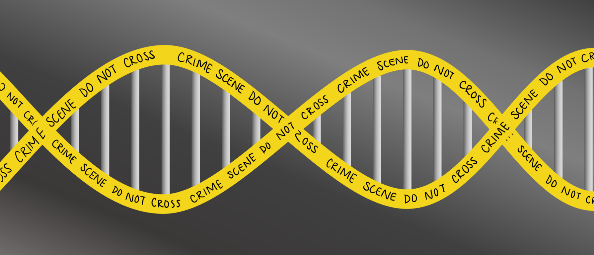

De vingerafdruk van DNA#

Inleiding#
DNA, de drager van genetische informatie in levende wezens, wordt al tientallen jaren gebruikt in het strafrecht. Maar hoe werkt het opstellen van DNA-profielen precies? Hoe kunnen forensische onderzoekers aan de hand van een DNA-reeks vaststellen van wie het DNA is?
DNA is eigenlijk gewoon een opeenvolging van moleculen, nucleotiden genaamd, die in een bepaalde vorm zijn gerangschikt (een dubbele helix). Elke nucleotide van DNA bevat een van de vier basen: adenine (A), cytosine (C), guanine (G), of thymine (T).
Elke menselijke cel bevat miljarden van deze nucleotiden, gerangschikt in volgorde. Sommige delen van deze sequentie (d.w.z. het genoom) zijn hetzelfde, of lijken tenminste sterk op elkaar, bij bijna alle mensen, maar andere delen van de sequentie vertonen een grotere genetische diversiteit en variëren dus meer binnen de bevolking.
Eén plaats waar DNA de neiging heeft een hoge genetische diversiteit te hebben is in de Short Tandem Repeats (STR’s). Een STR is een korte sequentie van DNA-basen die de neiging heeft talloze keren aansluitend te worden herhaald op specifieke plaatsen in het DNA. Het aantal keren dat een bepaalde STR wordt herhaald varieert sterk van mens tot mens. In de DNA-monsters hieronder, bijvoorbeeld, heeft Alice de STR AGAT vier keer herhaald in haar DNA, terwijl Bob dezelfde STR vijf keer heeft herhaald.

Het gebruik van meerdere STR’s in plaats van slechts één kan de nauwkeurigheid van DNA-profilering verbeteren. Als de waarschijnlijkheid dat twee mensen hetzelfde aantal herhalingen hebben voor een enkele STR 5% is, en de analist kijkt naar 10 verschillende STR’s, dan is de waarschijnlijkheid dat twee DNA-monsters puur toevallig overeenkomen ongeveer 1 op 1 quadriljoen (ervan uitgaande dat alle STR’s onafhankelijk van elkaar zijn). Dus als twee DNA-monsters overeenkomen in het aantal herhalingen voor elk van de STR’s, dan kan de analist er vrij zeker van zijn dat ze van dezelfde persoon afkomstig zijn.
CODIS, de DNA-database van de FBI, gebruikt 20 verschillende STR’s als onderdeel van het DNA-profielproces (in Europa worden tien van deze STR’s gebruikt). In Nederland beheert het Nederlands Forensisch Instituut (NFI) verschillende DNA-databases.
Database#
Hoe zou zo’n DNA-database er uit kunnen zien? In zijn eenvoudigste vorm zou je je een DNA database kunnen voorstellen als een CSV (comma separated values) bestand, waarin elke rij overeenkomt met een individu, en elke kolom met een bepaalde STR.
name,AGAT,AATG,TATC
Alice,28,42,14
Bob,17,22,19
Charlie,36,18,25
De gegevens in bovenstaand bestand suggereren dat Alice ergens in haar DNA de sequentie AGAT 28 keer achtereenvolgens herhaald heeft, de sequentie AATG 42 keer herhaald, en TATC 14 keer herhaald. Bob, ondertussen, heeft diezelfde drie STR’s respectievelijk 17 keer, 22 keer en 19 keer herhaald. En Charlie heeft dezelfde drie STR’s die respectievelijk 36, 18 en 25 keer worden herhaald.
Dus als je een DNA-reeks hebt, hoe kun je dan bepalen van wie die is? Wel, stel je voor dat je in de DNA-reeks zoekt naar de langste opeenvolgende reeks herhaalde AGAT’s en ontdekt dat de langste reeks 17 herhalingen lang is. Als je dan ontdekt dat de langste reeks AATG’s 22 herhalingen lang is, en de langste reeks TATC’s 19 herhalingen lang is, dan zou dat een vrij goed bewijs zijn dat het DNA van Bob is. Het is natuurlijk ook mogelijk dat wanneer je de tellingen voor elk van de STR’s neemt, het niet overeenkomt met iemand in je DNA-database, in welk geval je geen overeenkomst hebt.
In de praktijk weten analisten op welk chromosoom en op welke plaats in het DNA een STR zal worden gevonden, zodat zij hun zoekactie kunnen beperken tot slechts een klein gedeelte van het DNA. Wij negeren dit detail in deze opgave.
Voorbereiding#
Download het bestand met DNA-databases en begincode en pak het uit. Je zal de volgende bestanden en directories zien, in dna.py kan je al een begin van de opgave vinden.
.
├── databases
│ ├── large.csv
│ └── small.csv
├── dna.py
└── sequences
├── 10.txt
├── 11.txt
├── 12.txt
├── 13.txt
├── 14.txt
├── 15.txt
├── 16.txt
├── 17.txt
├── 18.txt
├── 19.txt
├── 1.txt
├── 20.txt
├── 2.txt
├── 3.txt
├── 4.txt
├── 5.txt
├── 6.txt
├── 7.txt
├── 8.txt
└── 9.txt
Opdracht#
Jouw taak is een programma te schrijven dat een DNA-sequentie en een CSV-bestand met STR-tellingen voor een lijst van personen inleest en vervolgens bepaalt aan wie het DNA (waarschijnlijk) toebehoort. Het programma zal je op de commandline als volgt kunnen gaan uitvoeren met Python:
python dna.py databases/large.csv sequences/5.txt
Lavender
Je ziet hier dat je Python het programma dna.py gaat laten uitvoeren en dat je op de commandline twee extra argumenten meegeeft (gescheiden door spaties), waar de eerste de DNA-database is (databases/large.csv) en de tweede STR-tellingen (sequences/5.txt). Het resultaat (“Lavender”) is de persoon waarvan de STR tellingen overeenkomen met de waarden in de database.
Jouw taak#
Jouw programma moet als eerste commandoregelargument de naam van een CSV-bestand met de STR-tellingen voor een lijst van individuen vragen en als tweede commandoregelargument de naam van een tekstbestand met de te identificeren DNA-sequentie.
Als het programma wordt uitgevoerd met het verkeerde aantal commandoregel-argumenten, moet het programma een foutmelding naar keuze (met print) afdrukken. Als het juiste aantal argumenten is opgegeven mag je aannemen dat het eerste argument inderdaad de bestandsnaam is van een geldig CSV-bestand en dat het tweede argument de bestandsnaam is van een geldig tekstbestand.
Voor elk van de STR’s zal jouw programma de langste reeks opeenvolgende herhalingen van de STR in de te identificeren DNA-sequentie moeten berekenen. Merk op dat we een hulpfunctie
longest_matchvoor je hebben gedefinieerd die precies dat doet!Als de STR-tellingen exact overeenkomen met één van de personen in het CSV-bestand, moet jouw programma de naam van het overeenkomende personen afdrukken.
Je kunt ervan uitgaan dat de STR-tellingen niet met meer dan één persoon overeenkomen.
Als de STR-tellingen niet exact overeenkomen met één van de personen in het CSV-bestand zal jouw programma “No match” moeten afdrukken.
Samenvatting#
Argumenten op de commandline#
Hoe kan je de commandline argumenten die worden meegegeven in jouw programma gebruiken? In dna.py zie je dat de module sys wordt geïmporteerd. De waarde van sys.argv zal op basis van het bovenstaande voorbeeld een list zijn met de volgende elementen:
["dna.py", "databases/large.csv", "sequences/5.txt"]
Het eerste element zal altijd de naam van de bestand zijn dat wordt uitgevoerd (dna.py) en de volgende elementen de verdere waarden die op de commandline worden meegegeven en dit zijn de bestanden die je zult moeten inlezen.
Bestanden lezen#
Het eerste argument dat jouw programma zal moeten accepteren is een CSV-bestand (comma separated values) wat dat de STR-tellingen voor een lijst van personen bevat. Een CSV-bestand is een tekstbestand waar waarden door komma’s gescheiden worden. Het is een eenvoudig formaat dat je ook in Excel zou kan openen.
Gebruik het volgende om het CSV-bestand regel voor regel in te lezen met behulp van de module csv.
database = []
with open("databases/small.csv") as file:
reader = csv.reader(file)
for entry in reader:
database += [entry]
De list database zal na het inlezen elke regel als list bevatten en is dus een lijst van lijsten, oftewel een LoL! Bijvoorbeeld
[
["name", "AGATC", "AATG", "TATC"],
["Alice", "2", "8", "3"],
["Bob", "4", "1", "5"],
["Charlie", "3", "2", "5"],
]
Belangrijk
Sta even stil bij deze structuur. De eerste rij (het eerste element, of database[0]) bevat de kolomnamen en de volgende elementen (database[1:]) zijn de rijen met de bijbehorende waarden.
Je zal de STR’s waar op moet worden getest straks moeten doorlopen en welke deze zijn kan je dus vinden in het eerste element (de eerste rij) in database. Gebruik hier variabelen om deze specifieke waarden te verzamelen om later te kunnen gebruiken, bijvoorbeeld
cols = databases[0] # de kolomnamen
stsr = cols[1:] # de STR's waar op moet worden getest
Let verder op dat de module csv alleen maar het bestand leest en elke waarde als een string zal zien, dus ook getallen. Bedenk dat je met int() een string waarde naar een integer kan omzetten.
De sequenties (het tweede argument) bevatten een enkele string en deze lees je als volgt:
with open("sequences/5.txt") as file:
sequence = file.read()
waar de variabele sequence nu de string uit het bestand zal zijn.
Testen#
Het projectbestand bevat een aantal STR-databases en DNA-sequenties om mee te testen.
Het volgende geeft als antwoord Bob
python dna.py databases/small.csv sequences/1.txtHet volgende geeft als antwoord No match
python dna.py databases/small.csv sequences/2.txtHet volgende geeft als antwoord No match
python dna.py databases/small.csv sequences/3.txtHet volgende geeft als antwoord Alice
python dna.py databases/small.csv sequences/4.txtHet volgende geeft als antwoord Lavender
python dna.py databases/large.csv sequences/5.txtHet volgende geeft als antwoord Luna
python dna.py databases/large.csv sequences/6.txtHet volgende geeft als antwoord Ron
python dna.py databases/large.csv sequences/7.txtHet volgende geeft als antwoord Ginny
python dna.py databases/large.csv sequences/8.txtHet volgende geeft als antwoord Draco
python dna.py databases/large.csv sequences/9.txtHet volgende geeft als antwoord Albus
python dna.py databases/large.csv sequences/10.txtHet volgende geeft als antwoord Hermione
python dna.py databases/large.csv sequences/11.txtHet volgende geeft als antwoord Lily
python dna.py databases/large.csv sequences/12.txtHet volgende geeft als antwoord No match
python dna.py databases/large.csv sequences/13.txtHet volgende geeft als antwoord Severus
python dna.py databases/large.csv sequences/14.txtHet volgende geeft als antwoord Sirius
python dna.py databases/large.csv sequences/15.txtHet volgende geeft als antwoord No match
python dna.py databases/large.csv sequences/16.txtHet volgende geeft als antwoord Harry
python dna.py databases/large.csv sequences/17.txtHet volgende geeft als antwoord No match
python dna.py databases/large.csv sequences/18.txtHet volgende geeft als antwoord Fred
python dna.py databases/large.csv sequences/19.txtHet volgende geeft als antwoord No match
python dna.py databases/large.csv sequences/20.txt
Tot slot#
Deze opdracht is onderdeel van CS50’s Introduction to Computer Science van Harvard University. Deze populaire cursus is vergelijkbaar met Programmeren en is online te volgen!
Copyright © 2020 Brian Yu, David J. Malan